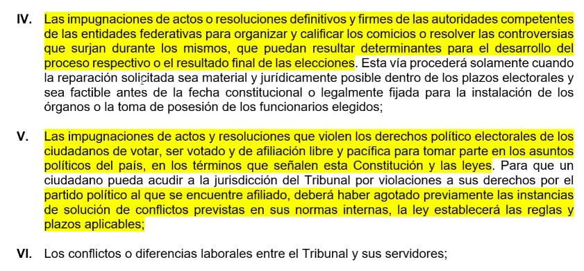

Artículo 99 CPEUM Fundamento del Tribunal Electoral



Artículo 41 CPEUM, se deben respetar los tiempos para las campañas electorales.


ARTÍCULO 94 Y TODA LA FRACCIÓN 13 DEL ARTÍCULO 107 CPEUM
FUNDAMENTO LEGAL DE LA JURISPRUDENCIA